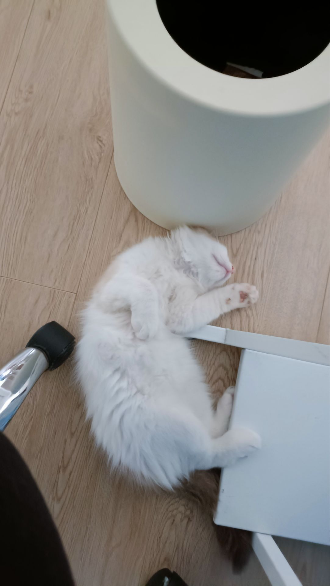

樱川由奈
@Xiaoyi_0324
@kilock_1208 跟我差不多哎 我以前的手机里放的都是出去玩的照片 然后 现在手机里全都是…截图

kilock🍥
@kilock_1208
翻出几个旧移动硬盘，本来是想做启动盘的。
没想到打开之后，全是照片。三四年前，我和我姐几乎玩遍了大半个中国——除了南方。那时候好像总有时间，总有精力，也总有说走就走的冲动。我还养过一只很粘人的小布偶猫。它会跟着我走来走去，睡觉也要挨着。 https://t.co/TL404SVpwk